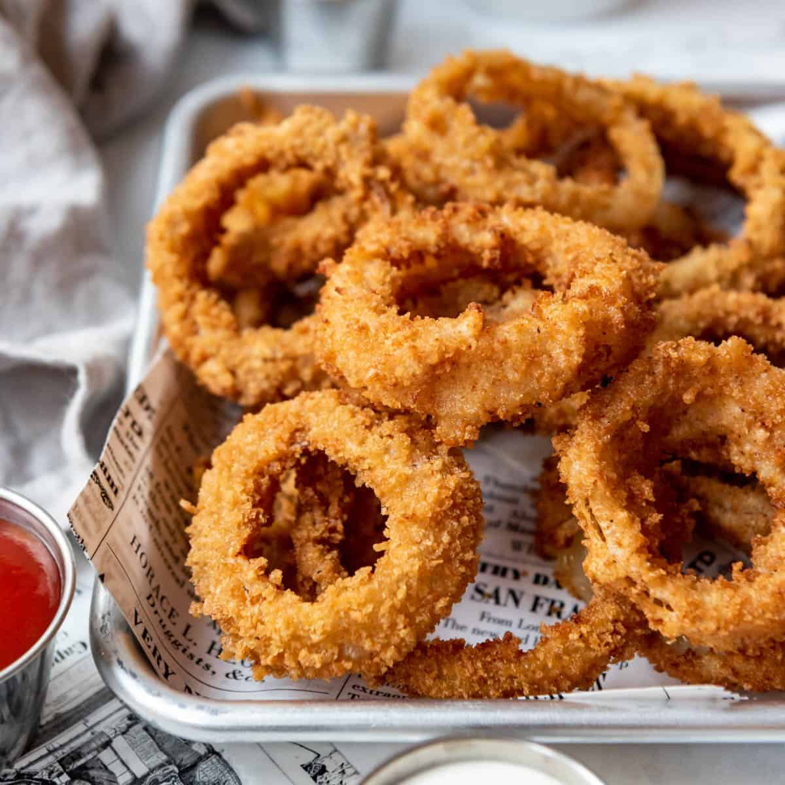

Home
Onion Rings Recipe

Onion rings are sliced onions that are dipped in a batter, and deep fried until crisp. These are considered as a fast food favorite; it can also be a good replacement for French fries.
The secret for a good onion ring is in the batter. The batter must contain the right amount of flavor to compliment the onion. It should also be crisp enough to be enjoyed. While there are many onion ring batter recipes around, I am still sticking with simplest recipe that I know.
Aside from being simple, I like this recipe because it does not call for any ingredients that are hard to find. The flavor is nice – typical of what I would expect for an onion ring to be – with a terrific texture.
Ingredients
- 1 large yellow onion sliced
- 1 1/4 cups all-purpose flour
- 1 teaspoon baking powder
- 1 teaspoon salt
- 1 piece egg beaten
- 1 cup milk
- 1 cup Panko bread crumbs
- 1 teaspoon salt
- 1/4 teaspoon ground black pepper
- 3 cups cooking oil
Steps
- Cooking procedure:
- Break up the onion slices into rings. Set aside.
- Combine flour, baking powder, and salt, in a small bowl and mix well.
- Dredge the onions on the flour mixture and set aside.
- Meanwhile, make the batter by adding the egg and milk on the flour mixture and whisk.
- Dip the onions on the batter and allow the extra batter to drip.
- Place the breadcrumbs in a plastic bag or container and put-in the onions rings.
- Heat a cooking pot and pour-in cooking oil.
- When the oil is hot, deep-fry the onion until the color turns golden brown (usually 2 minutes or so).
- Remove the onion rings from the cooking pot and place in a plate lined with paper towels, to absorb the excess oil.
- Transfer to a serving plate and serve.
- Share and enjoy!